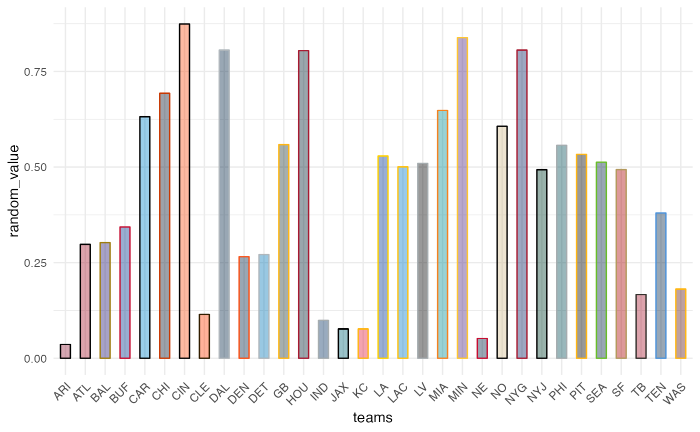

These functions map NFL team names to their team colors in
color and fill aesthetics
scale_color_nfl(
type = c("primary", "secondary"),
values = NULL,
...,
aesthetics = "colour",
breaks = ggplot2::waiver(),
na.value = "grey50",
guide = NULL,
alpha = NA
)
scale_colour_nfl(
type = c("primary", "secondary"),
values = NULL,
...,
aesthetics = "colour",
breaks = ggplot2::waiver(),
na.value = "grey50",
guide = NULL,
alpha = NA
)
scale_fill_nfl(
type = c("primary", "secondary"),
values = NULL,
...,
aesthetics = "fill",
breaks = ggplot2::waiver(),
na.value = "grey50",
guide = NULL,
alpha = NA
)
Arguments
| type |
One of "primary" or "secondary" to decide which colortype to use. |
| values |
If NULL (the default) use the internal team color vectors. Otherwise
a set of aesthetic values to map data values to. The values
will be matched in order (usually alphabetical) with the limits of the
scale, or with breaks if provided. If this is a named vector, then the
values will be matched based on the names instead. Data values that don't
match will be given na.value. |
| ... |
Arguments passed on to discrete_scale
paletteA palette function that when called with a single integer
argument (the number of levels in the scale) returns the values that
they should take (e.g., scales::hue_pal()). limitsOne of:
NULL to use the default scale values
A character vector that defines possible values of the scale and their
order A function that accepts the existing (automatic) values and returns
new ones. Also accepts rlang lambda function
notation. dropShould unused factor levels be omitted from the scale?
The default, TRUE, uses the levels that appear in the data;
FALSE uses all the levels in the factor. na.translateUnlike continuous scales, discrete scales can easily show
missing values, and do so by default. If you want to remove missing values
from a discrete scale, specify na.translate = FALSE. scale_nameThe name of the scale that should be used for error messages
associated with this scale. nameThe name of the scale. Used as the axis or legend title. If
waiver(), the default, the name of the scale is taken from the first
mapping used for that aesthetic. If NULL, the legend title will be
omitted. labelsOne of:
NULL for no labels
waiver() for the default labels computed by the
transformation object
A character vector giving labels (must be same length as breaks) A function that takes the breaks as input and returns labels
as output. Also accepts rlang lambda function
notation. guideA function used to create a guide or its name. See
guides() for more information. superThe super class to use for the constructed scale |
| aesthetics |
Character string or vector of character strings listing the
name(s) of the aesthetic(s) that this scale works with. This can be useful, for
example, to apply colour settings to the colour and fill aesthetics at the
same time, via aesthetics = c("colour", "fill"). |
| breaks |
One of:
NULL for no breaks
waiver() for the default breaks (the scale limits)
A character vector of breaks A function that takes the limits as input and returns breaks
as output |
| na.value |
The aesthetic value to use for missing (NA) values |
| guide |
A function used to create a guide or its name. If NULL (the default)
no guide will be plotted for this scale. See ggplot2::guides() for more information. |
| alpha |
Factor to modify color transparency via a call to scales::alpha().
If NA (the default) no transparency will be applied. Can also be a vector of
alphas. All alpha levels must be in range [0,1]. |
Examples
